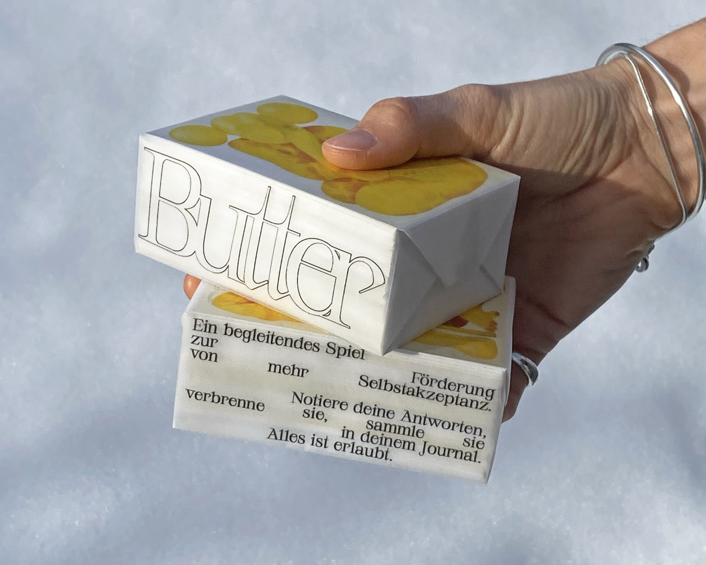

Filter, Vorbilder und Bildbearbeitung in den Sozialen Netzwerken
erschaffen
Idealbilder,
die biologisch oftmals gar
nicht existieren.
ButterBodies setzt genau hier an und macht Akzeptanz des eigenen Körpers spielerisch erlernbar. Weg
von Perfektion, hin zu echter Vielfalt.


Studien zeigen, dass Mädchen bereits im Grundschulalter beginnen, ihren Körper kritisch zu bewerten.
Social
Media verstärkt diesen Druck massiv.¹ Filter, Vergleichsdynamiken und idealisierte Körper sind
Alltag.
Viele Mädchen entwickeln so also ein permanentes Gefühl, nicht genug zu sein.
Und genau diese Unsichtbarkeit macht ButterBodies sichtbar. Dafür habe ich ein moderiertes
Reflexionsspiel
entwickelt und gestaltet, welches Mädchen einen sicheren Rahmen bietet, um über Körperbilder,
Selbstwahrnehmung und
Schönheitsnormen ins Gespräch zu kommen.
Es verbindet spielerische Aktivierung mit tiefgehender Reflexion. Das Format senkt die Hemmschwelle,
persönliche Themen anzusprechen, ohne therapeutisch zu überfordern.
Das Spiel schafft Struktur für sensible Gespräche oder unterstützt Fachkräfte dabei, Selbstakzeptanz,
Medienkompetenz und Gruppenzusammenhalt gezielt zu fördern.
¹Robert Koch-Institut (RKI), KiGGS-Studie